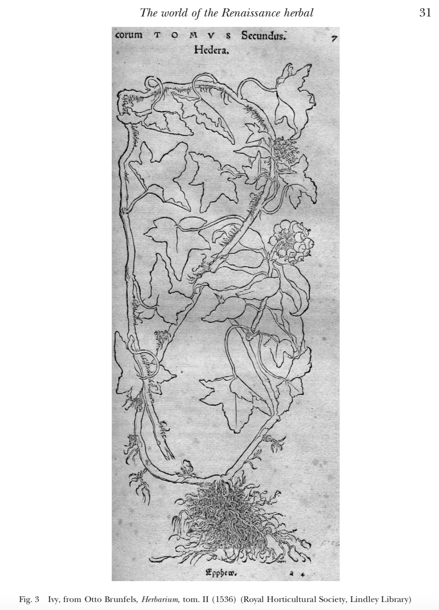
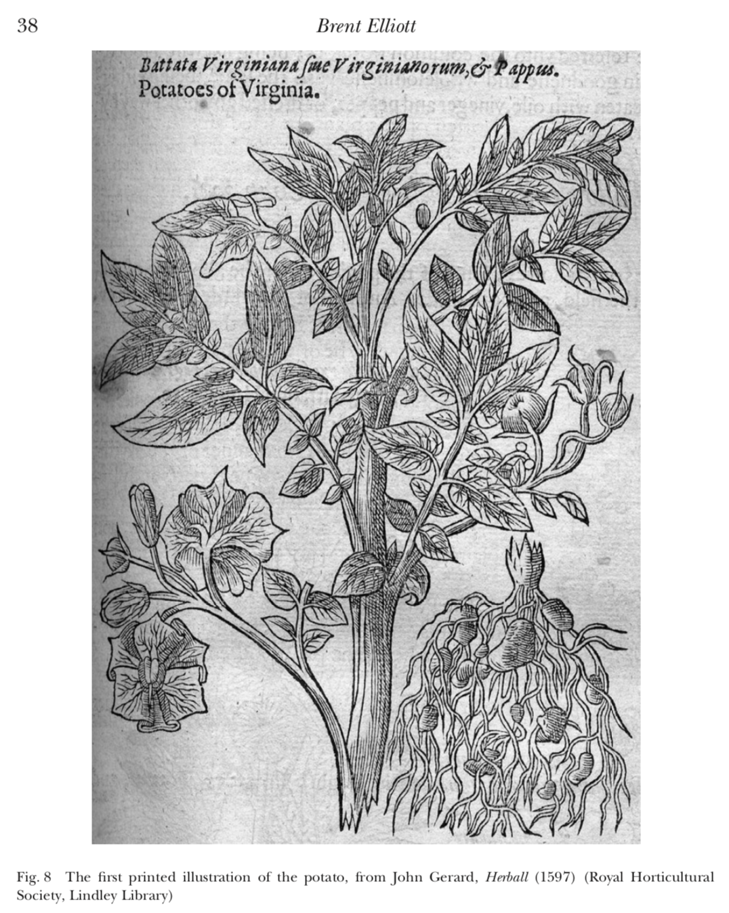
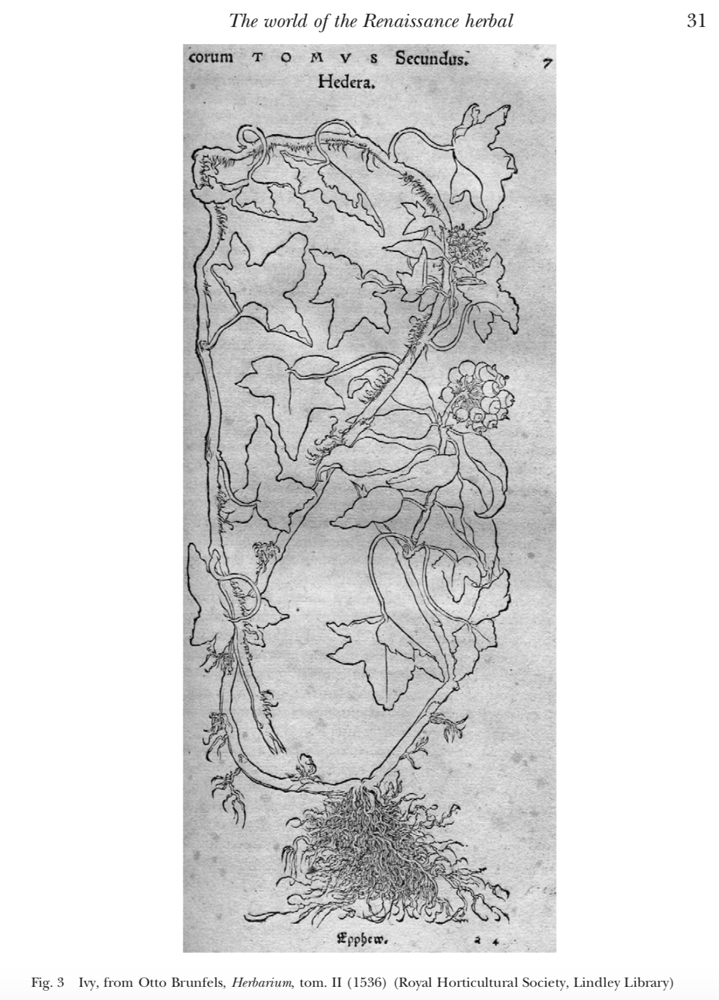
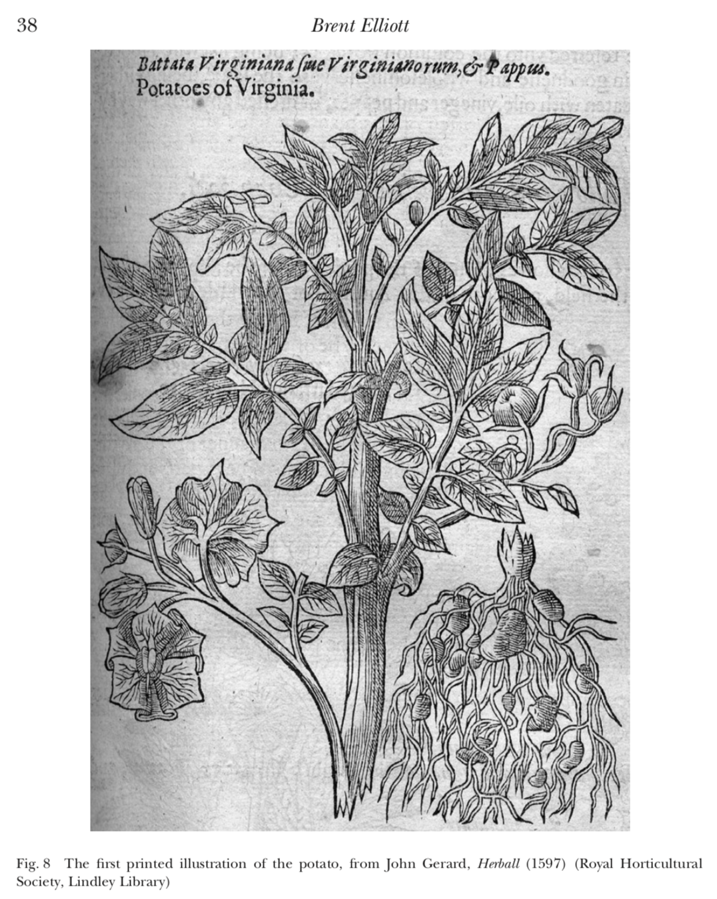

Is a Plant a Document?
The Knowledge Practices of Renaissance Natural History, Francis Bacon, and Contemporary Library Science
Ryan P. Randall
To follow along, load this in your browser: http://www.ryanpatrickrandall.com/talks/igc2019.html



The Knowledge Practices of Renaissance Natural History, Francis Bacon, and Contemporary Library Science
Ryan P. Randall
To follow along, load this in your browser: http://www.ryanpatrickrandall.com/talks/igc2019.html

